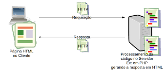

O Protocolo de Transferência de Hipertexto (HTTP) é um protocolo de comunicação utilizado na World Wide Web (WWW) para a transferência de dados entre um cliente (geralmente um navegador) e um servidor. Ele é baseado em um modelo de requisição-resposta, onde o cliente envia uma requisição ao servidor e o servidor responde com os dados solicitados.
O HTTP funciona através de requisições e respostas. Quando um usuário digita uma URL no navegador, o navegador envia uma requisição HTTP ao servidor que hospeda o site. O servidor processa essa requisição e envia uma resposta de volta ao navegador, que exibe o conteúdo da página solicitada.
Uma requisição HTTP é composta por várias partes, incluindo o método HTTP, o caminho do recurso solicitado, os cabeçalhos e, opcionalmente, um corpo. Os métodos HTTP mais comuns são GET (para solicitar dados) e POST (para enviar dados ao servidor).
GET /index.html HTTP/1.1
Host: www.exemplo.com
User-Agent: Mozilla/5.0 (Windows NT 10.0; Win64; x64) AppleWebKit/537.36 (KHTML, like Gecko) Chrome/58.0.3029.110 Safari/537.3
Accept: text/html,application/xhtml+xml,application/xml;q=0.9,image/webp,*/*;q=0.8
Accept-Language: en-US,en;q=0.5
Accept-Encoding: gzip, deflate, br
Connection: keep-alive
Upgrade-Insecure-Requests: 1
Nesta requisição, o método GET é usado para solicitar o arquivo "index.html" do servidor "www.exemplo.com". Os cabeçalhos fornecem informações adicionais sobre a requisição, como o tipo de navegador e as preferências de codificação.
A resposta HTTP é composta por um código de status, cabeçalhos e, opcionalmente, um corpo. O código de status indica o resultado da requisição (por exemplo, 200 para sucesso, 404 para não encontrado).
HTTP/1.1 200 OK
Content-Type: text/html; charset=UTF-8
Content-Length: 1234
Date: Wed, 21 Oct 2015 07:28:00 GMT
Server: Apache/2.4.1 (Unix) OpenSSL/1.0.1e-fips mod_bwlimited/1.4
Last-Modified: Wed, 21 Oct 2015 07:28:00 GMT
ETag: "1234567890"
Accept-Ranges: bytes
Content-Encoding: gzip
Vary: Accept-Encoding
Nesta resposta, o código de status 200 indica que a requisição foi bem-sucedida. O cabeçalho "Content-Type" informa que o conteúdo retornado é do tipo HTML, e o cabeçalho "Content-Length" indica o tamanho do corpo da resposta.
O protocolo HTTP é fundamental para a comunicação na web, permitindo que os navegadores e servidores troquem informações de forma eficiente. Compreender como funcionam as requisições e respostas HTTP é essencial para o desenvolvimento web e a solução de problemas relacionados à transferência de dados na internet.
Aqui estão algumas imagens ilustrativas do funcionamento do protocolo HTTP:
